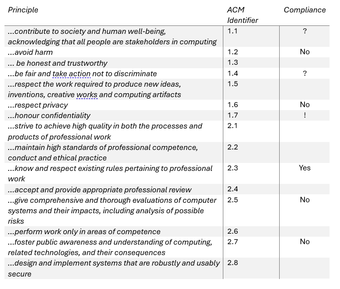
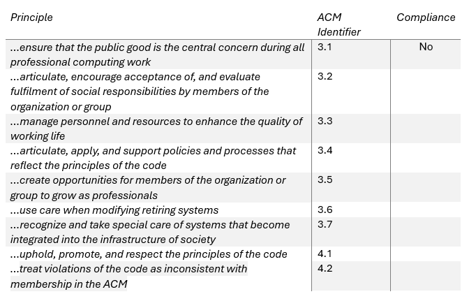

BCS and ACM Ethical Guidelines
This is a discussion I had with peers about BCS's and ACM's guidelines.
My Intial Post
In this post I'll be talking about ACM's case study titled "Automated Active Response Weaponry', which can be found here.
The case study describes a fictional scenario where a defence contractor develops an autonomous vehicle which has an automated response system that triggers when being attacked; responding with lethal actions. ACM then identify different ways that the defence contractor break the ACM Code of Ethics. The defence contractor was found to have violated a bunch of principles - but I found the way the analysis was presented a bit disorganised.
Below I've tried to organise the analysis and summarise the information:
 In the above tables, in the compliance columns: I've used the '?' symbol to indicate the potential for the principle to broken in the future, and I've used the '!' to indicate that the principle was broken by rogue members of the company, not representing the intention of the company.
This brings me to my main criticism of the ACM principles - there's principles that lead to conflicting conclusions. For example; principle 1.7 was broken by people protesting against the company, which is a violation; but their action was justified as it promoted compliance with principles 1.2, 2.5 and 2.7. These principles alone are not a replacement for an ethical framework for decision making.
Even more shockingly, some of ethical principles might actually promote the development of the defensive system - namely, principle 2.8. It all comes down to the matter of interpretation (Sylvia, 2015). Unfortunately, this room in interpretation allows companies to defend controversial positions.
I'd argue that the ACM principles are lacking in criticality and I hold the same opinion of the BCS code of conduct too, which has the principle 'respect the organisation, or individual you work for'. This principle justifies turning a blind eye to an employer's unethical actions. To improve criticality, I would recommend forming a set of principles that are organised by priority, or fitting an explicitly prioritised layer-model. In general, priorities shape decision-making, so I theorise that 'ethical priorities' must exist that shape ethical (good) decision-making.
References
Sylvia, K. (2015) 'Ethical challenges in different interpreting settings', in: Gheorghiu, C. & Herraez, J. (eds) MonTI. Monographs in Translation and Interpreting. 63-86. DOI: http://dx.doi.org/10.6035/MonTI.2015.ne2.2
My Intial Post / Peer A Response
Hi Brad,
Thanks for sharing your thoughts! I enjoyed reading your criticism of both the ACM and BCS codes, and your demonstration of a need for interpretation in order to apply these codes. As others, such as Seth (2023) have pointed out, although the ACM Code of Ethics is designed to be comprehensive, it provides little to no guidance on defining goals of a system. It is also unclear whether such codes have any observable effect on ethical decision making at all, even if participants are explicitly asked to observe such codes (McNamara et al., 2018).
The way you mapped out compliance (or non-compliance) in your tables is a great way to visualize what is being talked about. I think it is generally difficult to create a general and universally accepted set of ethical principles, as these can vary across cultures, believes, and countries. I do, however, believe that a more context-aware guideline may be more effective in encouraging ethical thinking. While the ACM and BCS codes have there flaws, we may be able to use them as foundations for future codes. However, one problem remains - as long as such codes are up to interpretation, they can be misused, and although they guide ethical decision making, they do very little in resolving ethical dilemmas (Wheeler, 2003).
References
Seth, A. (2023) What's Missing in the ACM Code of Ethics and Professional Conduct. Interactions 30(3): 44-47. DOI: https://doi.org/10.1145/3588003 [Accessed 24 March 2024].
McNamara, A., Smith, J. & Murphy-Hill, E. (2018) Does ACM's code of ethics change ethical decision making in software development? Proceedings of the 2018 26th ACM Joint Meeting on European Software Engineering Conference and Symposium on the Foundations of Software Engineering: 729-733. DOI: https://doi.org/10.1145/3236024.3264833 [Accessed 24 March 2024].
Wheeler, S. (2003) Comparing Three IS Codes of Ethics - ACM, ACS and BCS. PACIS 2003 Proceedings. Available from: https://aisel.aisnet.org/cgi/viewcontent.cgi?article=1106&context=pacis2003 [Accessed 24 March 2024].
My Intial Post / Peer A Response / My Response
Thanks for the response Michael, I'm glad you liked the read.
As researchers, I believe it's important to acknowledge methodological limitations for the comparison of methods; and in some sense, a list of ethical guidelines are like a list of laws, without the legal system governing them. I agree that it's difficult, if not impossible, to create a universally accepted set of ethical principles, and that's probably because there aren't many universally shared values. I wouldn't want to discourage the use of ethical guidelines, because at least in the case of ACM's and BCP's guidelines, the societies behind the guidelines have reputable intent, and there are definitely arguments to made of the benefits of guidelines too. Anybody who reflects on their own ethics will find assurance in ethical guidelines, and they might indirectly affect people too. But, I would like to see more meta-ethical reasoning / models behind each principle because making the meta-ethics explicit allows for the comparison, evaluation and prioritisation of meta-ethical models, which in turn, backs up the education of principles based upon them.
My Intial Post / Peer B Response
Thank you, Bradley, for your post and for sharing your thoughts on the criticism of the ACM and BCS code concerning the Case study with the fictional scenario of the defence contractor.
Organisations and companies providing services to the general public must constantly consider ethical considerations, so it should be with the fictional defence contractor developing an autonomous vehicle. However, McNamara et al. 2018 conclude that the ACM code of ethics has significantly less or no influence on ethical decision-making. This pattern of breaking the ACM code is also seen in this case, where you have identified a few breaches of code that the contractor has made.
I also agree that the ACM and BCS codes are just general guidelines and must not be legally followed by any entity. Therefore, to enforce these guidelines, proper governing laws, such as the Computer Misuse Act (UK Parliament, 1990), should be made and amended regularly to force such service providers to make ethical decisions based on either the ACM or BCS code of conduct.
Also, spreading awareness about the Code of Ethics and professionalism should be prioritised, promoting a culture of good ethical practices. A study by Karim et al. (2017) also confirms that good ethical practices contribute significantly to creating high-quality software products and preserving the Code of Ethics.
References
Karim, N.S.A., Al Ammar, F. and Aziz, R., 2017, September. Ethical software: Integrating code of ethics into software development life cycle. In 2017 International Conference on Computer and Applications (ICCA) (pp. 290-298). IEEE.
McNamara, A., Smith, J. and Murphy-Hill, E., 2018, October. Does ACM’s code of ethics change ethical decision making in software development?. In Proceedings of the 2018 26th ACM joint meeting on european software engineering conference and symposium on the foundations of software engineering (pp. 729-733).
UK Parliament. (1990) Computer misuse act 1990, Legislation.gov.uk. Available at: https://www.legislation.gov.uk/ukpga/1990/18/contents (Accessed: 19th March 2024).
My Intial Post / Peer B Response / My Response
Hi Prannoy,
I completely agree with you that protective ethical principles should made into proper governing laws. Businesses are then obliged to comply with the principles, or pay for damages. Furthermore, the principles might be subject to more academic scrutiny, and more developmental effort to comply, as there is a financial incentive to do so too.
I also find the perspective you shared of Karim et al interesting, as taken to it's extreme, we get a perspective where ethical codes might be viewed as product or service quality checks. From that perspective, the objective of ethical codes isn't necessarily to create general good, but to create good from a businesses perspective. However, I'd argue that this perspective is detrimental to creating well-being in people generally, as the effect of principles on profits becomes a factor in the creation of principles, meaning that certain principles may not be created unless customers are paying for them to be enforced...
When it comes to the selection of general guidelines for ethics, I'm more inclined to select principles that have an explicit underlying meta-ethical model that I can critically agree with, such as the principles selected by Curry et al (2019) which are:
1) Allocation of Resources to Kin (Family Values)
2) Coordination to Mutual Advantage (Group Loyalty)
3) Social Exchange (Reciprocity)
4) Contests between Hawks (Bravery) and Doves (Respect) [Just a note here, the terminology 'hawk' and 'dove' come from a biological game-theoretic model]
5) Division (Fairness)
6) Possession (Property Rights)
These principles might seem as arbitrary as any other set of principles, except the moral valence of each principle is accumulated from ethnographic records of 60 different societies. The underlying justification can be critically compared with justification of different ethical codes.
Unfortunately, the original papers for the introduction of BPS and ACM's codes are not public, and the principles are given moral valence by simply having intent to be professional beneath them. But intent to be professional cannot be a replacement for criticality in an academic setting. From a professional perspective though, adhering to ACM or BCS codes provides coordination to mutual advantage, which is good for professional networking. Therefore if you want to be professional, these are two really good sets of professional guidelines. More academic credibility might be obtainable for these guidelines, by confirming Karim et al.'s perspective that the adoption of these principles leads to improved product quality. Furthermore, a moderator analysis could determine the effect size of individual principles on software quality if enough literature exists connecting principle adoption to software quality. I personally think this kind of meta-analysis is necessary to support a selection of guidelines from an academic perspective.
References
Curry, O., Mullins, D. and Whitehouse, H. (2019) Is It Good to Cooperate? Testing the Theory of Morality-as-Cooperation in 60 Societies. Current Anthropology 60(1): 47-69. DOI: https://doi.org/10.1086/701478 [Accessed 1 April 2024].